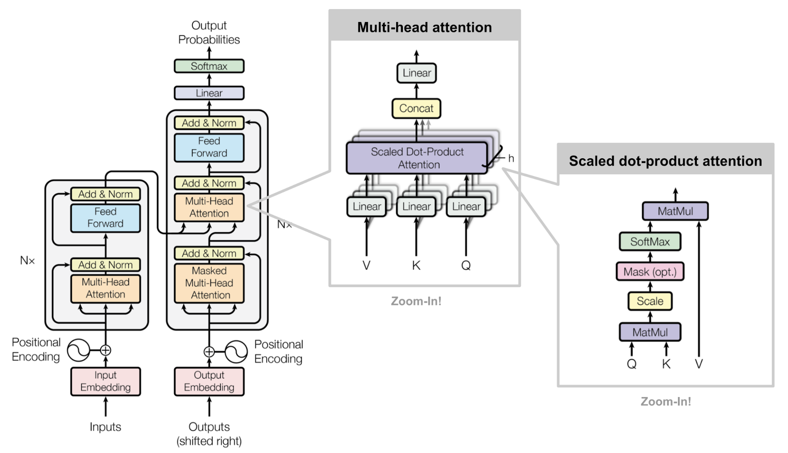
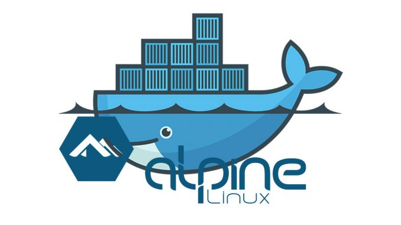
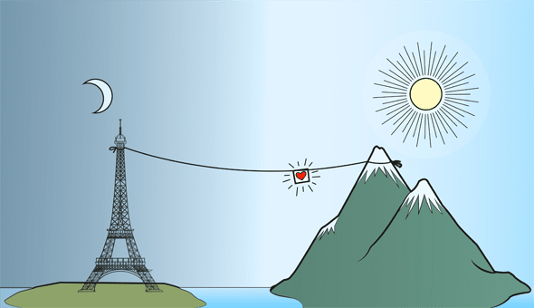

Multi Processing in Python
The multiprocessing library uses separate memory space, multiple CPU cores, bypasses GIL
limitations in CPython, child processes are kill able(ex. function calls in program) and is much easier to use. In this article I
compare two ways of implemeting multiprocessing via Process or via Pool

Lets chat with Telegram Bot
With the advent of social world, we are living with so many chatting apps and blogging
sites where at time, we our self don't know; who we are talking to. Is that really my friend or a bot mimicking him.
In this article I explain how to create a telegram bot.

Components of Transformer Architecture
Dependency modelling without considering input or output sequences deal with the problem
of model forgetting long-range dependencies that attention mechanism leverages. Neural sequence
transduction model — Transformer introduced in 2017 is entirely built on self-attention mechanism
without using sequence aligned recurrent architecture. Let's briefly talk about its components.
Ensuring Fairness in Machine Learning to Advance Health Equity
Health domain has witnessed an increase in use of machine learning (ML) technology
which follows the saying “garbage in garbage out”. Factors such as human and structural
biases at various stages of data collection, model design and prediction interpretation have
all accounted for widening the gap of health disparity among protective groups.

Alpine for Python Docker Images
When you’re choosing a base image for your Docker image, Alpine Linux is often recommended due to the benefits it comes with; Small. Simple. Secure.
But make sure that alpine makes Python Docker builds way too(50×) slower, and images double(2×) larger

Long Term Dependencies in Sequence Learning
Gradients propagated over many stages tend to either vanish (most of the time) or explode
(damaging optimization). The difficulty with long-term dependencies arise from exponentially smaller weights
given to long-term interactions (involving multiplication of many Jacobians).
Oxy-crisis: Solving via Twitter and Instagram data collection
The new variants of Wuhan Virus are spreading out rapidly and infecting larger populations in countries
of scale like India, Brazil, US and nearly all nations. Amid the pandemic, supplies of oxygen to patients is creating
panic in both public & medical infrastructure and are hot topic of discussion in quasi-fedral government’s discussions.

Moving Monoliths to MicroServices
A monolithic architecture is the traditional unified model for the design of a software program.
A microservice architectural style is an approach to developing a single application as a suite of small services,
each running in its own process and communicating with lightweight mechanisms, often an HTTP resource API.
The whole story and not just the wins
Kepler was a Data Scientist